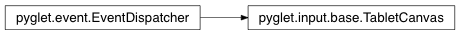

TabletCanvas Class¶
-
class
TabletCanvas(window)¶ Event dispatcher for tablets.
Use Tablet.open to obtain this object for a particular tablet device and window. Events may be generated even if the tablet stylus is outside of the window; this is operating-system dependent.
The events each provide the TabletCursor that was used to generate the event; for example, to distinguish between a stylus and an eraser. Only one cursor can be used at a time, otherwise the results are undefined.
Variables: window – The window on which this tablet was opened. Methods:
Attributes:
Inherited members¶
Methods
TabletCanvas.register_event_type(name)Register an event type with the dispatcher.
Registering event types allows the dispatcher to validate event handler names as they are attached, and to search attached objects for suitable handlers.
Parameters: name (str) – Name of the event to register.